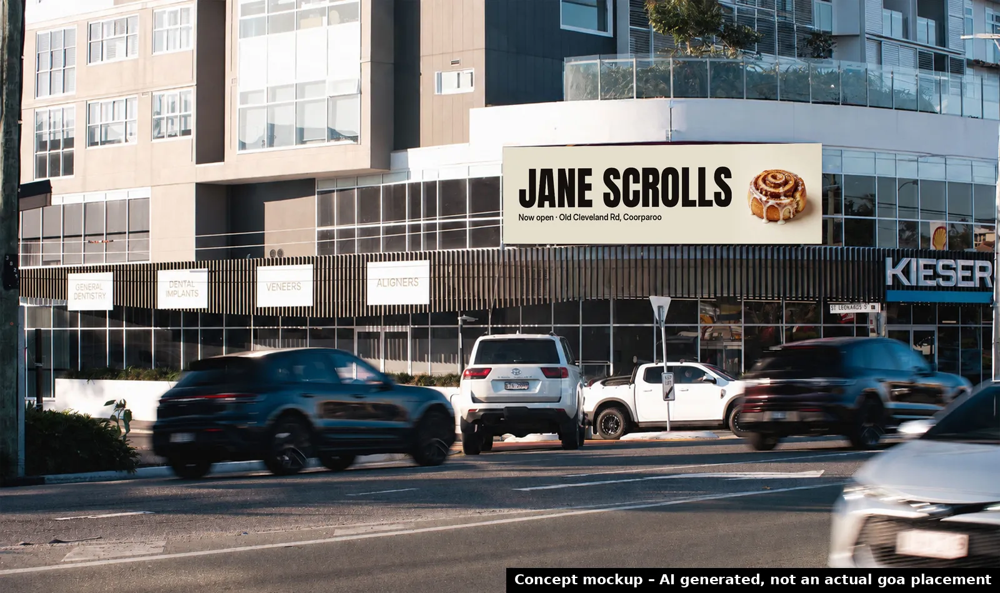
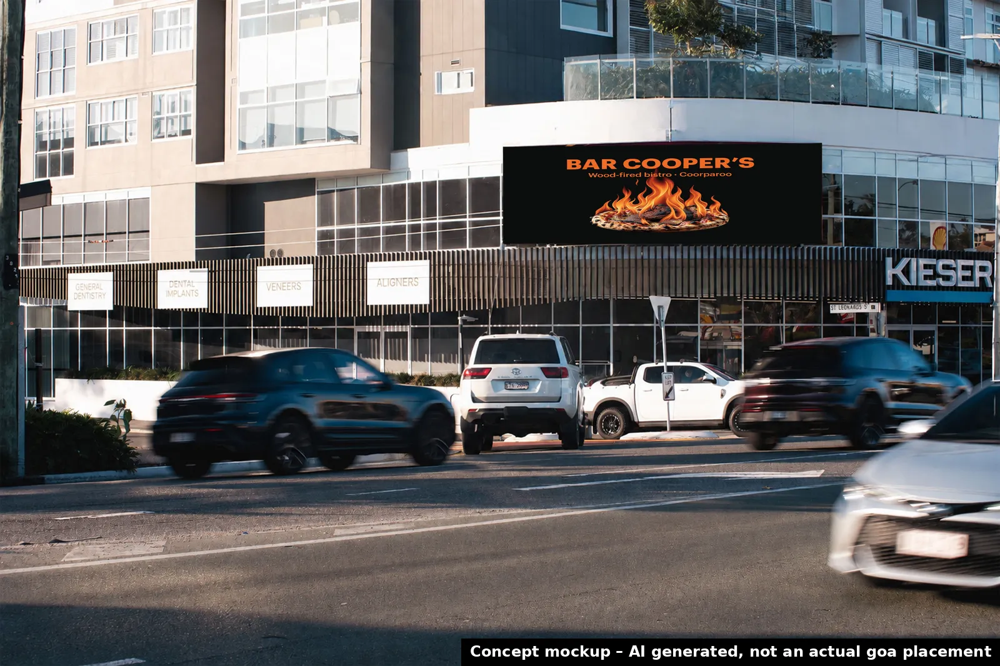
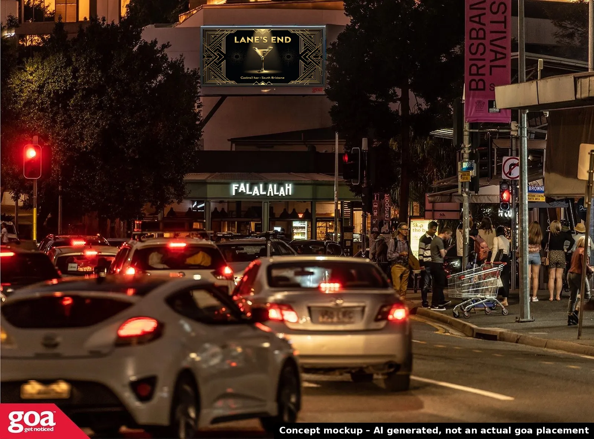
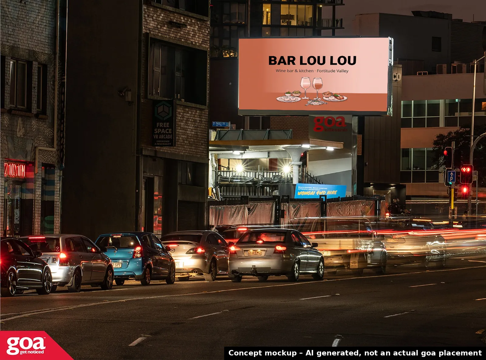
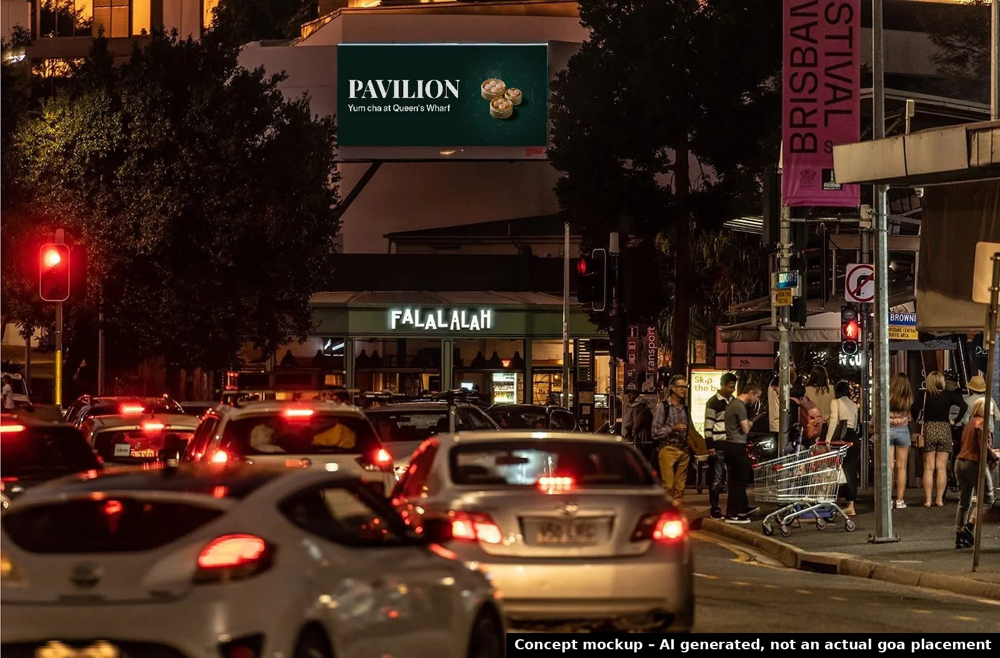
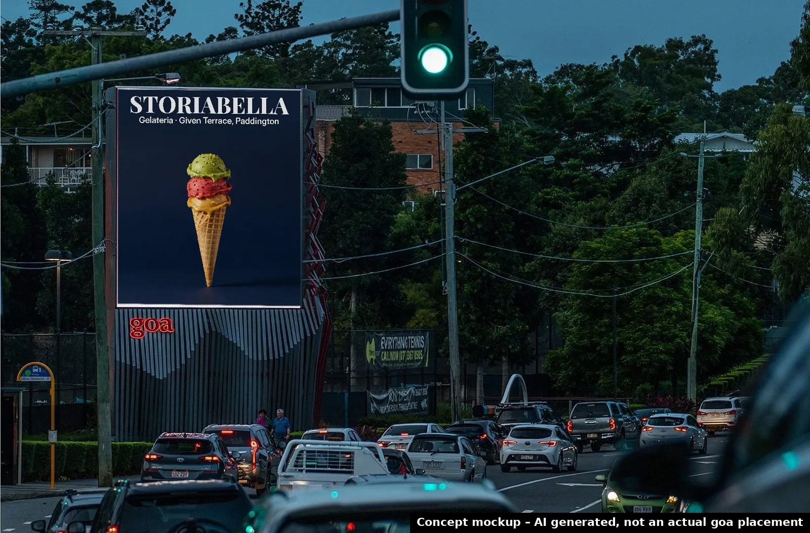
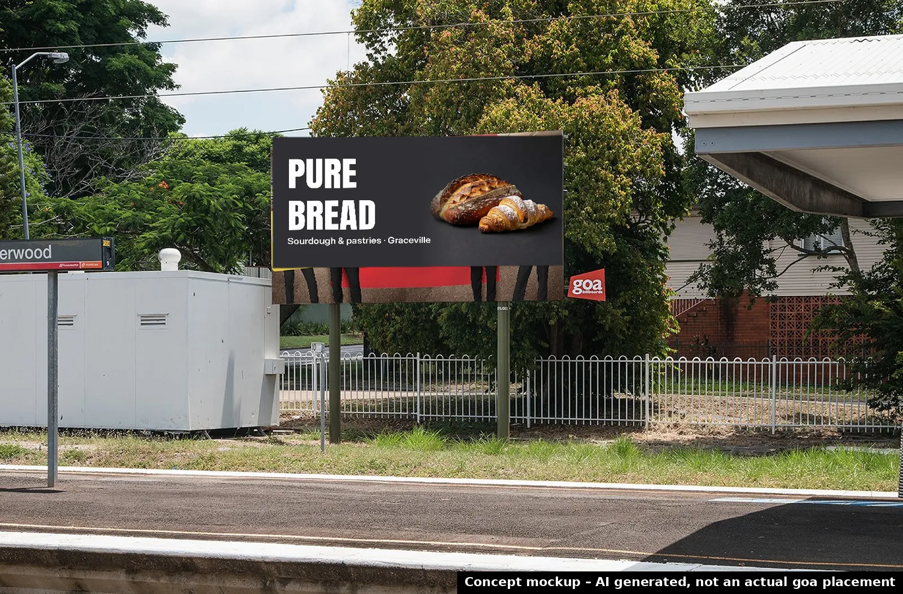

Proposal gallery
10 personalised proposal microsites
Each has an interactive map of nearby goa sites, a campaign builder, a timeline, a draft pitch and an AI concept billboard composited onto goa's public photo of a nearby site.
All billboard images are concept mockups, AI generated, not actual goa placements. No real business logos are used.

Jane ScrollsCoorparoo · score 92 · nearest goa site 0.3 km

LUMA self-serve gelatoNewstead · score 89 · nearest goa site 0.2 km

A Team DeliGrange · score 88 · nearest goa site 1.2 km

Bar Cooper'sCoorparoo · score 84 · nearest goa site 0.7 km

Lane's EndSouth Brisbane · score 84 · nearest goa site 0.4 km

Bar Lou LouFortitude Valley · score 84 · nearest goa site 0.3 km

Pavilion (Queen's Wharf)Brisbane City · score 83 · nearest goa site 1.0 km

Storiabella GelateriaPaddington · score 82 · nearest goa site 1.1 km

Pure BreadGraceville · score 82 · nearest goa site 1.1 km

Terrific Noodles (2nd site)Chermside · score 81 · nearest goa site 2.8 km